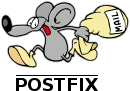

De retour pour une deuxième partie concernant mon expérience sur l'auto-hébergement. Pour ceux qui auraient loupé la première partie, la voici.
Je vous ai présenté le contexte de l'époque où ça a fait tilt dans ma tête, j'ai parlé de ma déconnexion du fournisseur de mail Gmail que j'utilisais à l'époque, et du service de synchronisation Dropbox.
Après avoir changé de fournisseur de mail, je me suis demandé si je ne pouvais pas faire ça moi-même chez moi. Car le problème est toujours le même : on quitte Gmail, c'est cool, nos mails ne sont plus dépouillés pour en tirer du profit, mais est-ce que le type à qui on fait confiance en hébergeant nos mails chez lui est vraiment de confiance ? C'est toujours mieux que Google me dira-t-on. Mais c'est moins bien que de le faire soit-même quand on en a les compétences, le temps et l'argent. Car oui, ce sont les trois principaux freins à l'auto-hébergement.
N'ayant pas des masses de thunes et voulant monter mon propre hébergement, j'ai décidé d'acheter un Raspberry Pi. J'avais entendu parlé de ce petit bijou quelques temps auparavant et je voyais ça plutôt comme un gadget. Mais les gens en parlaient de plus en plus, donnant aussi de plus en plus d'idées de choses à faire avec, allant du simple hébergement de mail à la vidéosurveillance avec une caméra. Ce qui est bien avec un Rpi, c'est qu'il est petit (de la taille d'une carte de crédit), est très simpliste ce qui donne un prix très raisonnable (compter 40/50€ pour le rpi + alimentation + la carte SD pour y mettre le système).

J'ai patienté des jours et des jours impatiemment avant de le recevoir, et une fois arrivé à destination, je me suis empressé de le démarrer et d'y installer des serveurs mail. Je vous avoue que c'est pas simple en premiers lieux : les services (tels Postfix, dovecot ...) sont tellement configurables et puissants qu'on s'y perd. Heureusement des tonnes de tutoriels et de documentations sont disponibles partout sur le net et c'est ce qui fait le charme de ces services (notamment Postfix).
Cependant je n'étais pas assez confirmé pour m'en servir comme serveur mail principal. Cela demande de la sauvegarde régulière (car si le serveur plante ou se fait attaquer, il faut pouvoir récupérer les mails), et il faut bien configurer le serveur Postfix pour ne pas atterrir dans les spams des boites mail. Mais voilà j'utilisais de plus en plus souvent pour m'inscrire sur des nouveaux sites web par exemple.
Ce qui m'a intéressé ensuite c'était de monter un petit blog pour raconter un peu tout ça et mon intéressement pour l'informatique ainsi que l'univers du logiciel libre. Le collègue Poulos m'a fait part de son envie de créer un blog pour le PGCD, le groupe qui à la base était sur Facebook (que j'ai quitté en même temps que Gmail). Le problème est que sur Facebook, les personnes lisent les notifications et nous ne savions pas qui était vraiment intéressé par ce que nous publiions. Alors que sur un blog, les commentaires peuvent nous faire avancer et paradoxalement, je trouve que c'est plus facile pour communiquer via un blog plutôt qu'avec un groupe Facebook. Au moins ici, nous avons notre petit espace à nous. C'est là qu'est né le blog du PGCD.
Pour en revenir au Raspberry Pi, je pense que c'est le bon plan pour répondre à 1 des 3 problèmes de l'auto-hébergement : l'argent. Cette petite machine consomme environ 3 Watts, ce qui représente grosso modo 3€ par an sur votre facture d'électricité. Plus de raison de dire que l'auto-hébergement nuit à la planète et à l'écologie dans ce cas !
Je vous parlerai dans le prochain billet de comment s'auto-héberger dans le cas où si nous n'y connaissons pas grand chose en administration système avec un projet : Yunohost.